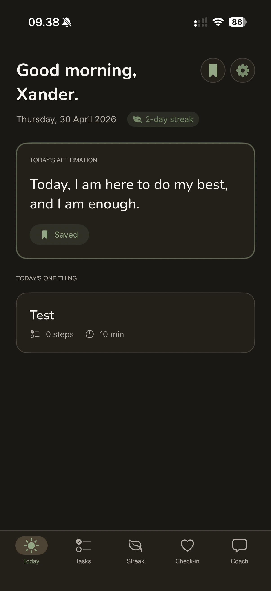
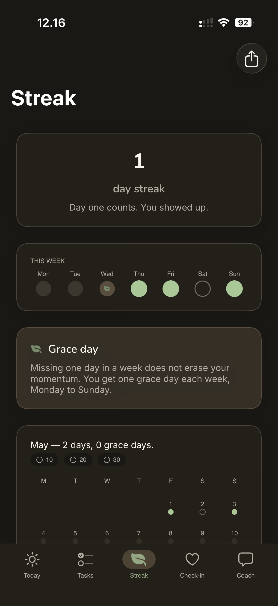
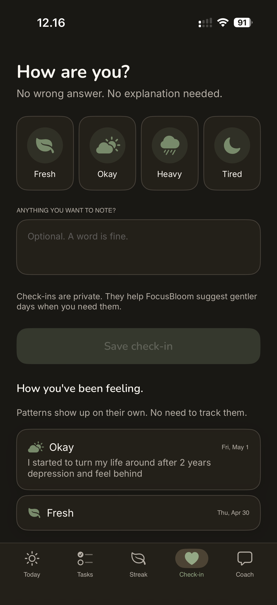

Calm streaks.
No shame.
One affirmation. One thing for today. A streak that forgives the missed days. Built end-to-end in SwiftUI.

FocusBloomCurrently shipping →
Calm streaks for ADHD brains. iOS · 2026.
Most productivity apps punish you for missing a day. The streak resets, the bar turns red, the shame compounds. That doesn't work for ADHD brains — it makes things worse. FocusBloom is the opposite: a streak that forgives, an affirmation that meets you where you are, and one small thing for today. No shame, no nudges turned threats. Built end-to-end at Blazed Labz — design, code, copy, identity.
Built in SwiftUI with SwiftData for local-first storage. On-device AI for the affirmation generation — your data never leaves your phone.
The Today screen is intentionally quiet: one affirmation, one task, one streak. Everything else is one tap away. The check-in flow uses gentle language by design — "How's today going?" instead of "Did you do it?" — because the wording is the product.


Designing for ADHD brains taught me that defaults are everything. Most apps' defaults assume a neurotypical user with strong executive function. Inverting that — assuming the user might be having a hard day, every day — changed almost every interaction.
Shipping an iOS app from design to TestFlight in-house also reframed what "finished" means. There's no version of this app that's done; there's just the version that's good enough to ship to the next round of testers.